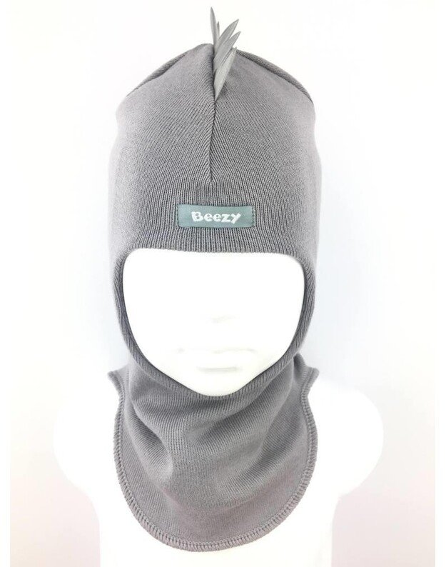
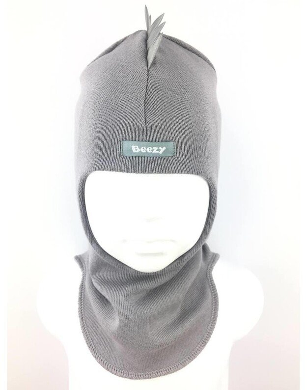

Kepurė - šalmas | Gretis - firminiai vaikiški drabužiai
2020.10.27 11:05
Prekių katalogas Išparduodamos prekės Kontaktai Prisijungti / Registruotis
Pirkinių krepšelis
uždaryti uždaryti Prekių katalogas Kontaktai Prisijungti / Registruotis Krepšelis ( o ) 0 / 0.00 € Back Pradžia Prekių katalogas Kepurės Kepurė šalmas Previous product Kostiumėlis “Žirafiukas” Next product Kepurė - šalmas 8.47 €Kepurė šalmas
Įvertinimas: 5.00 iš 5 (viso įvertinimų: 1 ) ( 1 pirkėjo atsiliepimas)8.47 €
Dydžių aprašymai
(S) 1 – 2 metų amžiaus.
(M) 3 – 4 metų amžiaus.
(L) 5 – 6 metų amžiaus.
Kategorijos
Kaklaskarės (46) Kelnytės (9) Kepurės (5) Komplektukai (20) Liemenės (1) Seilinukai (9) Suknytės (3) Treningai (23)Išparduodamos prekės
Treningas “Miško samanos” 16.70 € Treningas “Kalėdos!” 16.70 € Treningas “Kalėdos!” 18.76 € 16.70 € Treningas “Žieminukas” 16.70 € Treningas “Ledinis pingvinas” 17.91 € 16.70 € Papildoma informacija Atsiliepimai (1) Pristatymas Papildoma informacijaPapildoma informacija
Kepurės dydisS, M, L
Atsiliepimai (1)1 atsiliepimas apie Kepurė šalmas
Įvertinimas: 5 iš 5Evelina Svetlovaitė (įsigijo produktą) – 2018 9 lapkričio
Gavom kepuryte tiesiog nuostabi, gražiai pasiūta,šilta, kokybiška.Rekomenduojam!!!
Rašyti atsiliepimą gali tik prisijungę pirkėjai, kurie yra įsigiję šį produktą.
PristatymasPristatome prekes visoje lietuvoje jums patogiausiu būdu.
Taip pat galime pristatyti prekes visose europos sąjungos šalyse.
Panašūs produktai
Greita peržiūraKepurė šalmas
8.47 € Pasirinkti Greita peržiūraKepurė – šalmas “Pelėdžiukas” (rudas)
8.47 € Pasirinkti Greita peržiūraKepurė šalmas
8.47 € Pasirinkti Greita peržiūraKepurė šalmas “Pelėdžiukas” (pilkas)
8.47 € Pasirinkti Facebook Twitter EmailKlientams
Privatumo politika Terminai ir sąlygos Apmokėjimas Klientų atsiliepimai KontaktaiPrekių katalogas
Komplektukai Golfai Kaklaskarės Kelnytės Marškinėliai Pižamos Suknytės TreningaiGaukite naujienas į el.paštą pirmieji!
© 2020 Gretis firminiai vaikiški drabužiai . All rights reserved
Scroll To Top We use cookies to improve your experience on our website. By browsing this website, you agree to our use of cookies. Accept More info- Šilta kepurė-šalmas
- Vaikiška meškučio kepurė šalmas - EDGClothes
- Kepurės, pirštinės, šalikai - Vaikiška avalynė
- Kepurės-šalmai
- Kepurė - šalmas - Musumažyliai
- Kepurė - šalmas | Gretis - firminiai vaikiški drabužiai
- Kepurė - šalmas DSP Plius
- Kepurė šalmas vaikams - Papuosk-save.lt
- Kepure salmas - Šalikas, riešinės, kepurė, kepurė šalmas ...
- Kepurės / Šalmai - Spec apranga
- Šilta kepurė-šalmas
Kepurė - šalmas su vilna Beezy vaikams.- Tinkama dėvėti nuo 0 ° C iki -25 ° C - Viršutinė medžiaga.. € 29.60. Kreminės neperšlampančios sniego pirštinės HANDAI. 1-2 m., (gamintojas nurodo 1-2 dydį)Visos pirštinės ilgis: 22 cmPirštinės ilgis nuo riešo iki piršt.. ...
- Vaikiška meškučio kepurė šalmas - EDGClothes
kepurė-šalmas - nauja be etiketės, šilta, akrilo siūlai, puošta dideliu bumbulu, dydis 54/56, + p. iš.
- Kepurės, pirštinės, šalikai - Vaikiška avalynė
Kepurė su kaklu mezgimo aprašymas. Toks kepurės modelis dažnai įvardijamas kaip šalmas. Labai patogus ir praktiškas daiktas vaikams šaltuoju sezonu.
- Kepurės-šalmai
Vaikiška kepurė šalmas rudeniui. Puikiai dengianti kaklą kepurė, tinkanti rudeniui ir pavasariui. Patogi, švelni ir stilinga kepurė Jūsų mažyliams. Galimi visi dydžiai ir įvairios spalvos
- Kepurė - šalmas - Musumažyliai
Kepurė/šalmas. Kepurė su smūgius absorbuojančiu akrobutilstireno (ABS) įdėklu ir minkštu pamušalu viduje. Apsaugo nuo nedidelės energijos mechaninių smūgių. Su vėdinimo angomis, užtikrinančiomis oro cirkuliaciją ir komfortą.
- Kepurė - šalmas | Gretis - firminiai vaikiški drabužiai
Medžiaga: 100% medvilnė Spalva: juoda, mėlyna, žalia Svoris: 220 g Dydis: universalus, reguliuojamas velcrotipo lipduku (55-62 cm) Atitinka standarto EN812 reikalavimus, turi CE ženklą Naudojimas: ši kepurė-šalmas sukurta Jūsų asmeniniam saugumui, tačiau nesuteikia galvai pilnos apsaugos.
- Kepurė - šalmas DSP Plius
Minkšta kepurė-šalmas apsaugos vaiko kaklą ir ausytės. Dydžiai: vienas dydis (vaikams nuo 4metu) Sudėtis: akrilas 70%, vilna 30%
- Kepurė šalmas vaikams - Papuosk-save.lt
Apie Specapranga.lt. KAS MES? WWW.SPECAPRANGA.LT tai specializuota internetinė parduotuvė kuri yra pritaikyta kiekvienam žmogui ieškančiam darbo saugos priemonių bei aktyvaus laisvalaikio produktų
- Kepure salmas - Šalikas, riešinės, kepurė, kepurė šalmas ...
Kepurė - šalmas - Kepurė žiemai, dvigubos medžiagos. Medžiaga su pūkeliu viduj dėl to labai šilta. Didžiausias patogumas, kad nereikia šaliko, kaklas visada saugus nuo šalčio
- Kepurės / Šalmai - Spec apranga
Back Pradžia Prekių katalogas Kepurės Kepurė – šalmas. Previous product. Kepurė - šalmas 8.47 ...
Kepurė - šalmas su vilna Beezy vaikams.- Tinkama dėvėti nuo 0 ° C iki -25 ° C - Viršutinė medžiaga.. € 29.60. Kreminės neperšlampančios sniego pirštinės HANDAI. 1-2 m., (gamintojas nurodo 1-2 dydį)Visos pirštinės ilgis: 22 cmPirštinės ilgis nuo riešo iki piršt.. ...
kepurė-šalmas - nauja be etiketės, šilta, akrilo siūlai, puošta dideliu bumbulu, dydis 54/56, + p. iš.
Kepurė su kaklu mezgimo aprašymas. Toks kepurės modelis dažnai įvardijamas kaip šalmas. Labai patogus ir praktiškas daiktas vaikams šaltuoju sezonu.
Vaikiška kepurė šalmas rudeniui. Puikiai dengianti kaklą kepurė, tinkanti rudeniui ir pavasariui. Patogi, švelni ir stilinga kepurė Jūsų mažyliams. Galimi visi dydžiai ir įvairios spalvos
Kepurė/šalmas. Kepurė su smūgius absorbuojančiu akrobutilstireno (ABS) įdėklu ir minkštu pamušalu viduje. Apsaugo nuo nedidelės energijos mechaninių smūgių. Su vėdinimo angomis, užtikrinančiomis oro cirkuliaciją ir komfortą.
Medžiaga: 100% medvilnė Spalva: juoda, mėlyna, žalia Svoris: 220 g Dydis: universalus, reguliuojamas velcrotipo lipduku (55-62 cm) Atitinka standarto EN812 reikalavimus, turi CE ženklą Naudojimas: ši kepurė-šalmas sukurta Jūsų asmeniniam saugumui, tačiau nesuteikia galvai pilnos apsaugos.
Minkšta kepurė-šalmas apsaugos vaiko kaklą ir ausytės. Dydžiai: vienas dydis (vaikams nuo 4metu) Sudėtis: akrilas 70%, vilna 30%
Apie Specapranga.lt. KAS MES? WWW.SPECAPRANGA.LT tai specializuota internetinė parduotuvė kuri yra pritaikyta kiekvienam žmogui ieškančiam darbo saugos priemonių bei aktyvaus laisvalaikio produktų
Kepurė - šalmas - Kepurė žiemai, dvigubos medžiagos. Medžiaga su pūkeliu viduj dėl to labai šilta. Didžiausias patogumas, kad nereikia šaliko, kaklas visada saugus nuo šalčio
Back Pradžia Prekių katalogas Kepurės Kepurė – šalmas. Previous product. Kepurė - šalmas 8.47 ...

 
